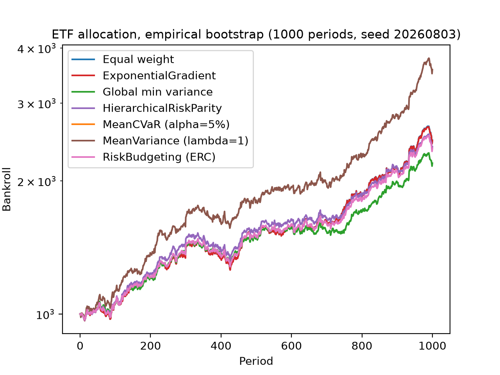
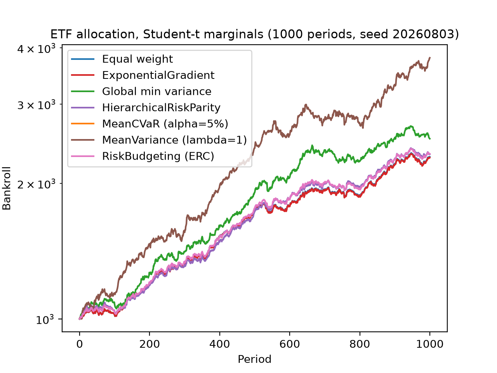
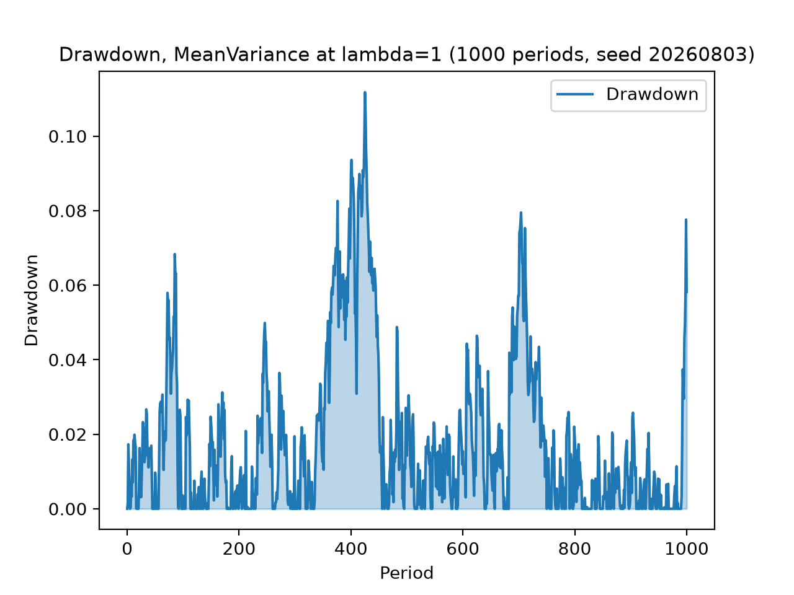
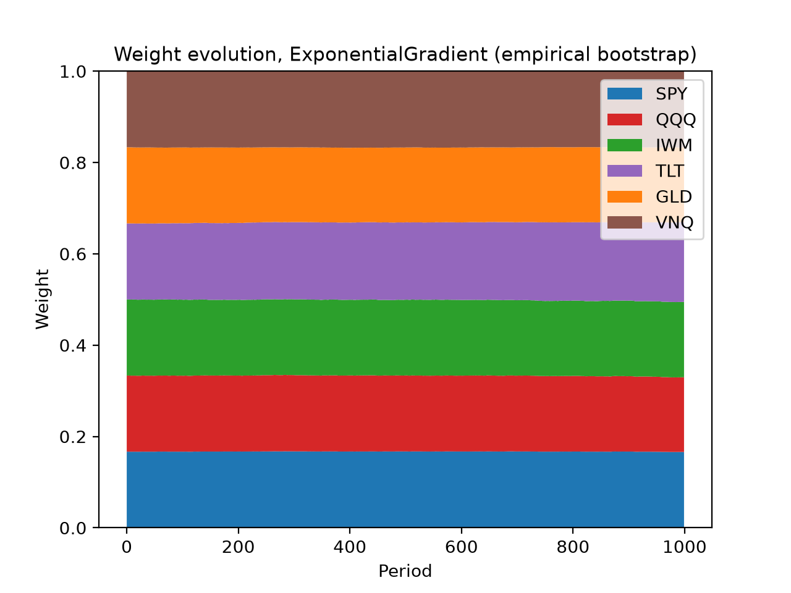

Allocation over ETF returns¶
examples/allocation_etfs.py runs keeks’ allocation layer over a real
six-ETF book — SPY, QQQ, IWM, TLT, GLD and VNQ, spanning US large-cap and
small-cap equities, growth, long treasuries, gold and real estate — and
asks the question the single-bet pages cannot: what do the allocators
actually disagree about, when they all size the same portfolio?
Two joint-return models are built from the same committed daily simple
returns (examples/data/etf_returns.csv, window 2022-10-03 to
2025-10-01): the empirical bootstrap via
keeks.allocation.models.scenario_model(), and per-option Student-t
marginals fitted by maximum likelihood via
keeks.allocation.models.fit_marginals_model() (a scipy-gated extra).
Each model is then replayed for 1,000 periods through the
keeks.allocation.simulators.AllocationSimulator with seven books
side by side: five allocators — MeanVariance at λ = 1, RiskBudgeting
(ERC), HierarchicalRiskParity, MeanCVaR at α = 5% and the online
ExponentialGradient — against two benchmarks, equal weight and global
minimum variance. Every allocator inside a pass meets the same seeded
realizations (common random numbers, seed 20260803), so the comparison is
the allocators’ and not the draw luck’s.
Warning
These are simulated results from a model, not a forecast and not investment advice. The replay resamples one three-year window of history and charges no fees — neither of which holds in a real book. Keeks is an educational library; treat every number below as a property of the model, not a prediction about money.
Growth paths¶


Growth of the seven books under the empirical bootstrap model, seed 20260803. MeanVariance at λ = 1 leads throughout; MeanCVaR’s flat line is its unit-risk-aversion posture holding cash (below).¶
The same comparison under fitted fat-tailed marginals keeps the ordering:


Growth of the same seven books under Student-t marginals fitted to the same window. The Student-t draws carry no scenario rows, so MeanCVaR — still bound to the empirical scenarios — reprices nothing here.¶
Drawdown and weights¶


Peak-to-trough drawdown of the leading book, MeanVariance at λ = 1, over the empirical-bootstrap replay. The growth story above is bought with drawdowns of this size.¶


Weight evolution of the online allocator, ExponentialGradient, recorded each period during the empirical-bootstrap pass and relabelled with the tickers. It starts near equal weight and barely moves.¶
MeanCVaR holds cash, on purpose¶
The flat line at $1,000 in both growth charts is MeanCVaR at its
shipped unit risk aversion, and it is the example’s most instructive result
rather than a failed solve. The objective trades expected return against
the tail’s expected loss one-for-one, and it is positively homogeneous in
the return scale — so on daily-frequency market data, where expected daily
return sits far below the tail’s expected loss, the honest optimum is full
cash. No unit choice changes that; the risk-aversion dial is a documented
follow-up. The mean-variance family, which squares the same trade-off
against variance rather than the tail, sizes aggressively on the same
inputs — which is exactly the contrast the side-by-side replay exists to
show.
Reproducing it¶
One command, from a checkout of the repository:
uv run python examples/allocation_etfs.py
The default run is fully offline — it loads the committed fixture, whose
provenance header names the tickers, the date window and the refresh
command — and prints a comparison table (final funds, growth, per-period
volatility, maximum drawdown) for each pass before writing the four charts
above into examples/output/. Pass --refresh to re-download the
window from Yahoo Finance via yfinance (a development-only dependency;
keeks never imports it at runtime) and rewrite the fixture first.